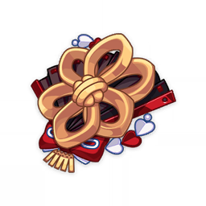

Artifacts
Husk of Opulent Dreams
Husk of Opulent Dreams
Bonuses:
Pieces:
A small golden ornament with six petals that shall never wilt. It symbolizes the transience of mortal glories.
A feather-shaped token that was brought forth from a secluded hall. The compassion of its creator led to it being left within that mansion along with a certain slumbering form.
As far as Inazuma is concerned, this is some small object from overseas. The heart of this mechanism has been removed, and its hands no longer turn.
A gourd that has been adorned with powdered gold and black paint. Its original color can no longer be discerned, but its main use seems to be as a performance prop.
A hat that once shielded a wanderer from sun and rain. It eventually became a convenient tool with which faces might be hidden and expressions obscured.